The spectrum view shows spectra as a count histograms, retrieved from a connected device or loaded from a file. It can show several spectra combined in one plot or separately. This can be changed under Options -> Tabbed-/Combined Spectrum View.
Background spectra can be viewed as one the three following methods No background, Background overlay and background subtract. Background overlay shows the background spectrum overlaid on top of the main spectrum. Background subtract does channel wise subtraction of the background from the foreground spectrum, this is a hard background subtraction and will effect ROI calculations on the spectrum. Both Background overlay and background subtract only show values of count rate.
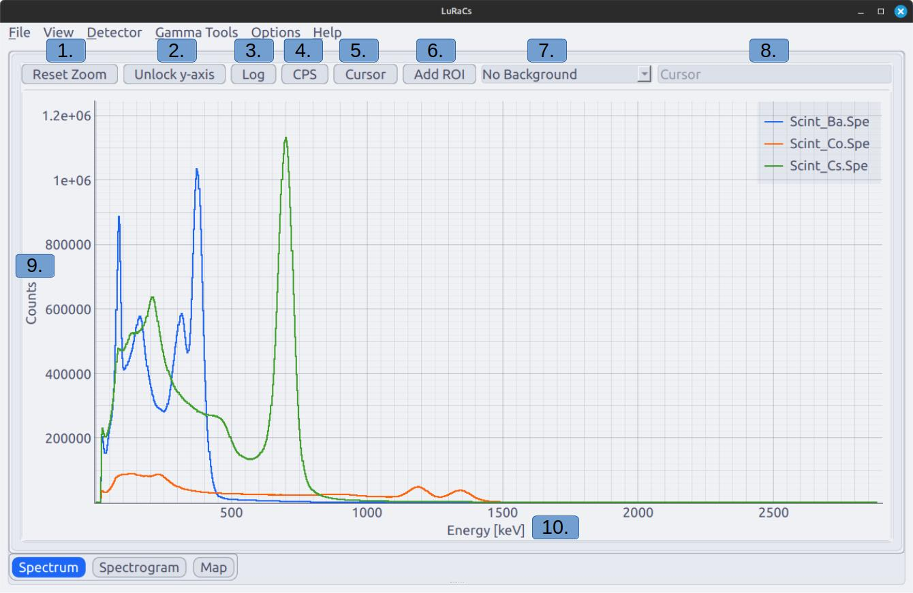
Rest Zoom resets the zoom of the spectrum and locks the y-axis if unlocked.
Unlock y-axis allows the y-axis to be zoomed independently and disables autoscaling.
Log set the scale of the y-axis to logarithmic.
CPS normalises the spectrum to the live time, or real time if live time is not available but real time is.
Cursor toggles the spectrum cursor, see .
Add ROI adds a customisable region of interest to the spectrum, see .
Switch the use of background spectrum. Options are No background, Background overlay and background subtract. See the section above.
Display for info from the cursor, see .
The y-axis show either total counts or time normalised counts in units of .
The x-axis always display energy in units of keV.
Regions of interest (ROI) are sub regions of the spectrum bounded in energy and are useful in the analysis of spectrum peaks. Spectrum peaks can in most cases be approximated with a Gaussian function and knowing the function parameters to describe is useful for many analyses. LuRaCs provides a method for fitting Gaussian functions to peaks inside ROIs and do so by default. These fits are required by other tools in the application. However, ROIs can also be configured to not perform fits, in these cases only the total ROIs counts are calculated.
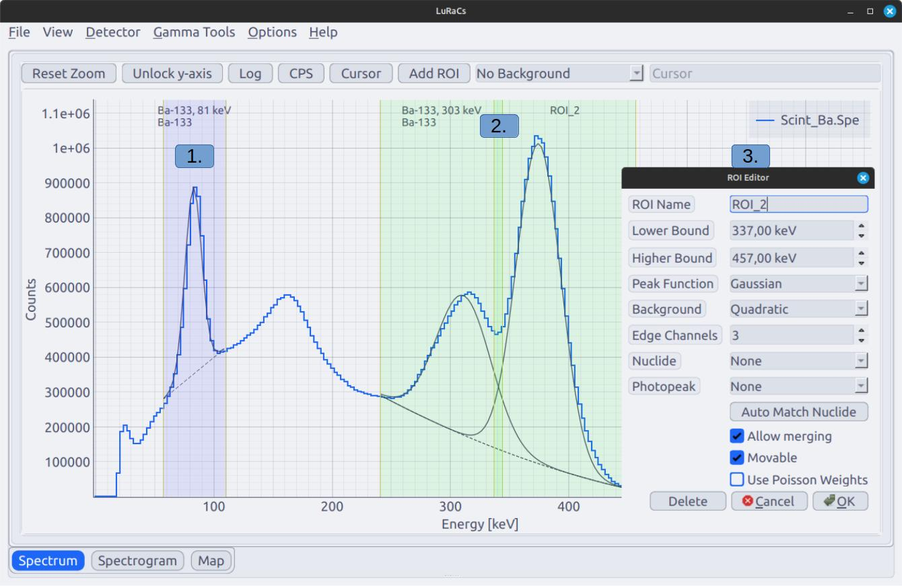
A ROI with one peak and a fitted Gaussian peak and linear background.
Two merged ROIs that fit two Gaussian peaks on a shared quadratic background.
The ROI editor for ’ROI_2’, see .
| Field | Description |
|---|---|
| ROI Name | An alias for the ROI used for display purposes and easier identification. |
| Lower Bound | The lower energy bound of the ROI. |
| Upper Bound | The upper energy bound of the ROI. |
| Peak Function | The type function fitted to the peak. Options are: Guassian, None |
| Background | Type of function used as peak background. Options are: None, Linear, Quadratic |
| Edge Channels | The number of channels inside of ROI from the upper and lower bounds of the ROI used to fit the background. |
| Nuclide | Assign a nuclide from the reference library to the ROI. Used for calculations by other tools. |
| Photopeak | Choose the specific photon emission associated with the peak in the ROI. Options are based on the chosen nuclide. |
| Auto Match Nuclide | Attempt to automatically find the Nuclide and Emission of the peak. If any nuclides are check and shown in the spectrum the match is limited to these. Blind matches are often unreliable. |
| Allow Merging | Allow the ROI to merge with other ROIs with merging allowed. |
| Movable | If the ROI can be moved by using the mouse. |
| Use Poission Weights | Apply a 1/σ weight to the optimisation to force the peak to emulate a Poission distribution. |
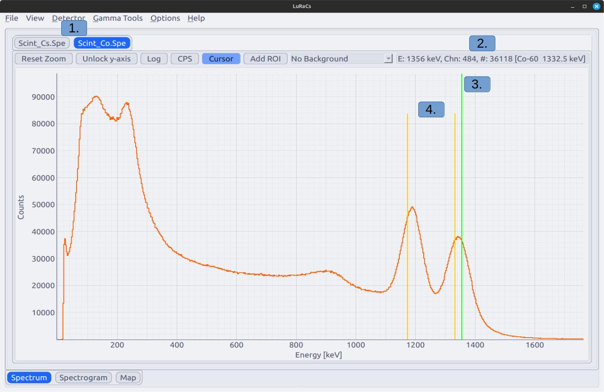
Tabs for selecting spectrum in Tabbed Spectrum View.
Information about the cursor, it shows position of the cursor in units of energy, corresponding channels number, the number of counts in the channel, closest reference emission line as [nuclide Emission Energy Decay chain if applicable]. Channel and channel counts are only displayed in tabbed spectrum view.
Cursor in the spectrum.
Emission lines of the suggested nuclide. These are always to closest to the cursor and does not weigh intensity or anything else. Can be disabled by View -> Spectrum -> Show Cursor Emissions.
A spectrogram allows time-series measurements to be conducted. A spectrogram stores data at specified time intervals and can be displayed in a waterfall plot. It is also the method LuRaCs uses for mobile measurements. If a GPS is connected the geolocation data provided is automatically stored in the spectrogram. These measurements can visualised on the embedded Map.
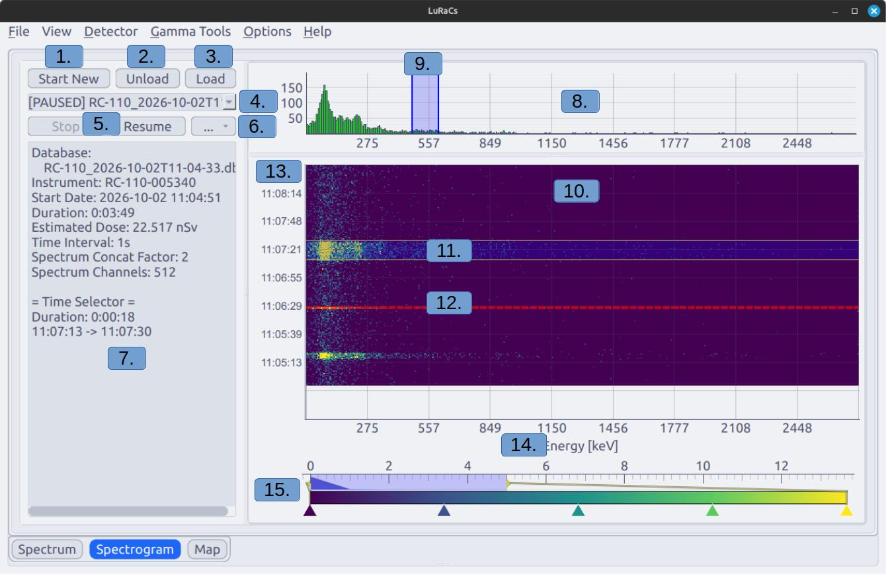
Opens a dialog for starting a new spectrogram.
Close the viewed spectrogram.
Shortcut to the Data Store Spectrogram page, see section 1.7.
Selector for currently loaded spectrograms. Status is shown to the left as [ACTIVE], [LOADED] or [PAUSED].
Pause or Resume data collections, requires that the same instrument used collect the previous data to be connected.
Options menu, see
Current information stored in the spectrogram and information about the Time Selector if active.
Count histogram. Shows either total accumulated spectrum upon loading a measured spectrogram, summed channel counts inside the Time Selector if active or counts in the latest row.
ROI illustrated in the histogram, can be deleted with Mouse-2.
Waterfall diagram of the spectrogram.
Time Selector to study a specific time interval. Can be toggled in the options menu (6.).
Break line, illustrates that the time between measured points exceeds the Time Interval. Can indicate a connection and caution should be taken to verify data integrity. Can be toggled in the options menu (6.).
Y-axis displays the timestamps of when each row was measured.
X-axis display spectrum energy if calibrated.
Color slider for the waterfall diagram. Color map can be changed by clicking Mouse-2 on the gradient bar.
The spectrogram format is based around an SQLite database, see section [sec:file_spectrogram] for further details on the format. The following data is stored for each time point in the spectrogram:
Timestamp.
Average count rate measured since the last time point.
Average dose rate measured since the last time point.
Device temperature at the time the data is written.
Longitude at the time the data is written, if a GPS is available.
Latitude at the time the data is written, if a GPS is available.
Spectrum difference since the last written data point, stored as compressed binary.
Meta data, stored as a utf-8 encoded and zlib compressed json-string. Examples of stored metadata include extended GPS data.
is done trough the data store, quickly accessed via the Load-button (2.).
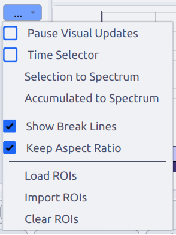
| Field | Description |
|---|---|
| Pause Visual Updates | Stop the view spectrogram from updating while the measurement is still going on in the background. This does not stop the recording of the spectrogram. |
| Time Selector | Show a selection ROI in the spectrogram (11.) that can select specific time interval and show the sum of the channels in the top count histogram (8.). |
| Selection to Spectrum | Export the selected interval to the datastore as a spectrum. |
| Accumulated to Spectrum | Export all accumulated counts to the datastore as a spectrum. |
| Show Break Lines | If the red lines (12.) indicating if the interval between two rows exceed the specified save interval should be shown. |
| Keep Aspect Ratio | If the pixels in the spectrogram should always be square. For detectors with many channels it can be useful to turn this off. If this is off the pixels in the spectrogram may not align with the corresponding bar in the count histogram. |
| Load ROIs | Shortcut the to ROI tab of the Data Store. |
| Import ROIs | Load ROIs from a file. |
| Clear ROIs | Remove all spectrogram ROIs |
Loading a map enables viewing of geographic measurements made with a spectrogram and a GPS. Maps can be loaded from online API requiring an internet connection or loaded from a .pmtiles-file for offline use. Compatible APIs and files are offered by several vendors, the software QGis offers support for exporting .pmtiles from other formats using plugins.
LuRaCs does not provide or distribute map data. Users are responsible for ensuring that any map data or tile services they use with LuRaCs are obtained and used in accordance with the applicable licenses, terms, and usage restrictions.
The map is rendered using Qt’s web engine making it a powerful but heavy tool. Using offline maps can use a lot of system memory since the server needs to cache tiles for a smooth view. Use a system with enough memory for this method. However, both the map and datapoints are rendered using GPU acceleration with WebGL allowing for 10 000s of points to be displayed without excessive stress on the system. For reference, a Raspberry Pi 5 with 8 GB of RAM can render a 1.4 GB map file without any stutter, total memory usage was approximately 2 GB.
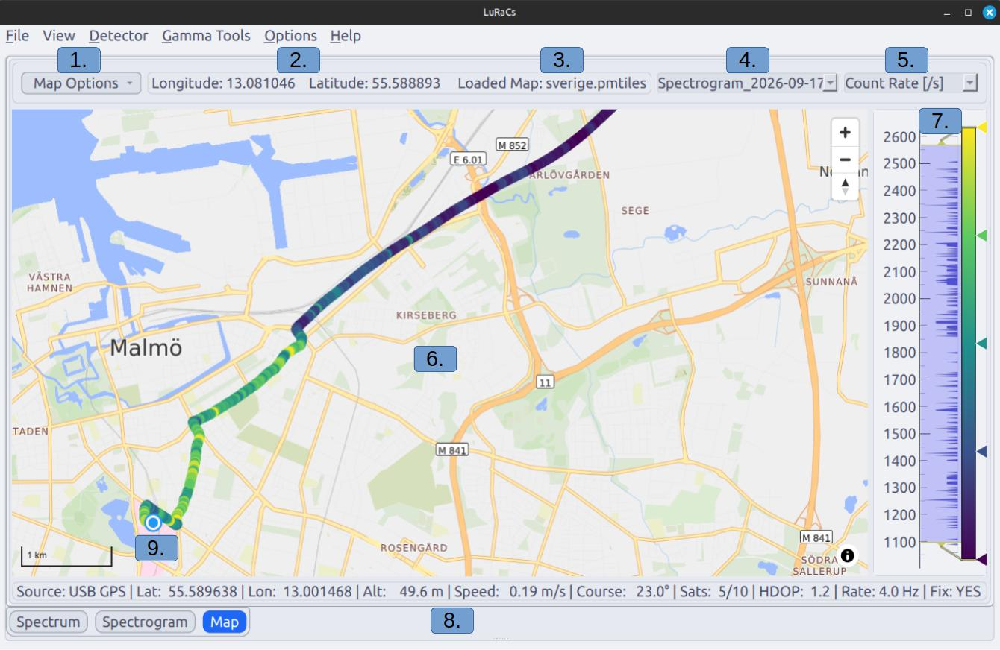
Options menu for loading maps and importing and exporting simple tracks.
Longitude and Latitude of the cursor.
Name of the loaded map.
List of loaded spectrograms, if the selected contains no geolocation data no points are displayed.
Selector for what data is shown. total Count Rate, Dose Rate or count rate inside a loaded ROI.
Main map view.
Color gradient selector for the track points and a histogram over measured values. Color map can be changed by clicking Mouse-2 on the gradient bar.
Live data from the GPS.
Current GPS position, always displayed as a white and blue circle.
is done from Map Options -> Load Online/Offline Map. An offline map takes the form of a .pmltiles files and choosing this options prompts the selection of such a file. Choosing to load an online map prompts the entering of a URL to a tile serving API, possibly including an API key. The checkbox allows for saving the last used URL. If a personal API key is used be aware that URLs are saved unencrypted.
Displays information about loaded spectra, both from files and detectors.
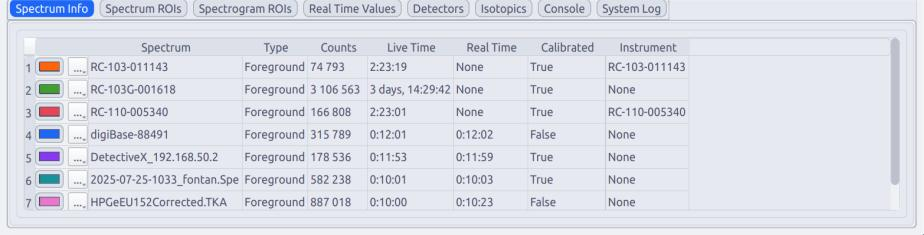
XML or N42 file extensions are kept in the name.| Column | Description |
|---|---|
| Column 0 | Color button allowing for changing the color of a spectrum. Options button marked with ’...’, see . |
| Spectrum | The name of the spectrum. |
| Type | Foreground or Background, these share the same name in the ’Spectrum’-column for the same spectrum. |
| Live Time | The live time of the measurement, accounting for dead time. |
| Real Time | The real time of the measurement. |
| Calibrated | True or False, if an energy calibration is detected and applied. |
| Instrument | Which instrument is assigned to the spectrum, see section [sec:definitions] |
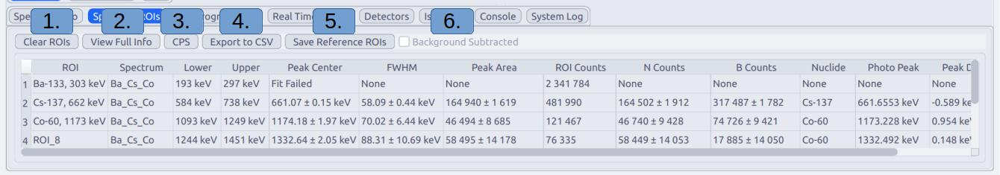
Clear all loaded ROIs from all spectra.
Debug view of all data contained in the loaded ROIs.
Apply time normalisation to the calculated ROI data.
Export the calculated data and the live of each ROI to a CSV-file.
Save ROI references to the Data Store, see section 1.7, for later access. These save the settings of the ROI but not the data.
Icon to display if the spectrum is background subtracted since this effects the results of ROI calculations.
Spectrogram ROIs differ from Spectrum ROIs in that do no curve fitting. When applied to a spectrogram they sum the counts from all the channels within their bounds and do so for every row in the spectrogram. The results are displayed in count rate, the number of counts are normalised to the save interval, for easier comparison if the recorded spectrograms use different save intervals.
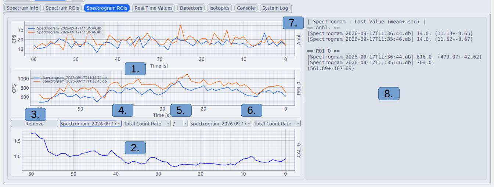
Plots over two spectrogram ROIs evaluated on two spectrograms.
Calculation ROI
Button for removing the calculation ROI
Settings for the first spectrogram in the calculation ROI. The first combobox lists loaded spectrograms and the second selects the data, total count rate or count rate from a ROI.
Mathematical operation used to compare the values, +, - or /.
Settings for the second spectrogram in the calculation ROI. Setting identical to the first (4.).
ROI names. Calculation ROIs currently only have a tag.
ROI data in text form. Shown is the latest value and (mean+-std) calculated from the data shown in the plot.
For use in mobile measurements where several ROIs is monitored at the same time a ’Compact View’ can be used. This is enabled under View -> Spectrogram ROis -> Compact View. This strips everything except the y-ticks and the plot itself.
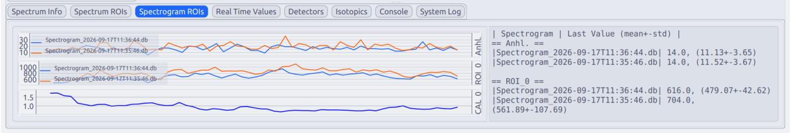
Calculation ROIs are plots calculated from the results of other ROIs. These perform element wise operations and do not account for differences in measurement parameters. Element 0 from ROI 0 is combined with Element 0 of ROI 1, regardless of measurement date or spectrogram save interval.
Plots the values sampled for a detector in real time. Not all detectors provide both Count Rate and Dose Rate, in these cases the detector is still registered to the plot but noting is shown. Y-axes can be made logarithmic by right clicking the axis Plot Options -> Transforms -> Log Y.
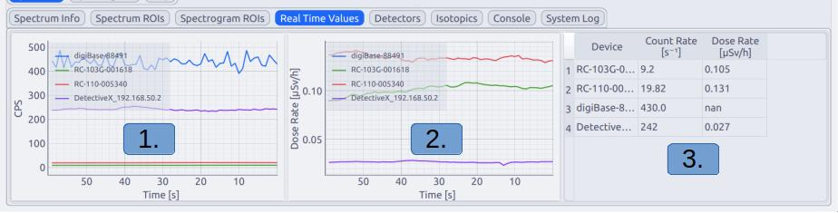
Count Rate plot.
Dose Rate plot, y-axis is always .
Latest values sampled from the corresponding detector.
Information and status of connected detectors are displayed in this tab.
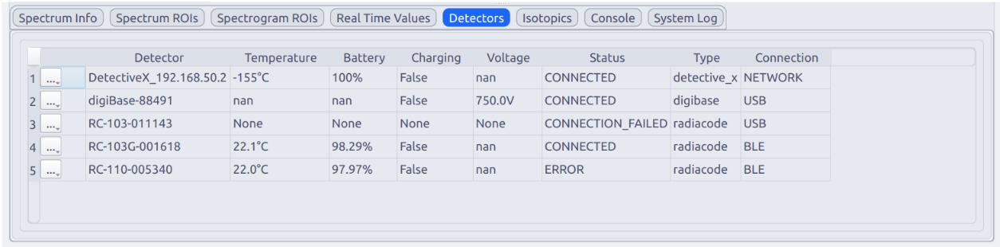
STOPPED.| Column | Description |
|---|---|
| Column 0 | Options button marked with ’...’, see . |
| Detector | The name of the detector. |
| Temperature | The temperature reading reported by the detector in ∘C. |
| Battery | Reported battery charge in %. |
| Charging | If the detector reports that it is charging. |
| Voltage | The actual voltage reported by the detector in V. |
| Status | Detector state machine reporting the current status of the detector.
|
| Type | Type of detector by the name defined in the detector client. |
| Connection | How the detector is connected. Can be BLE, USB or NETWORK. |
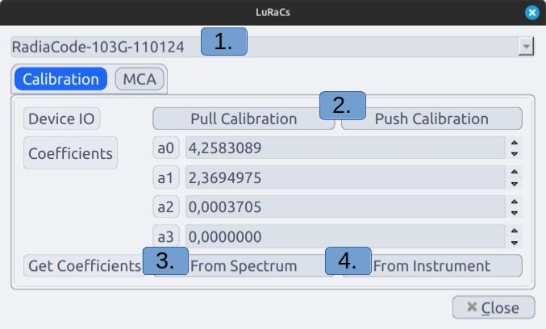
Unique Instrument from the library to pull settings from.
Interact with the detector. Pull Calibration will request a calibration from the detector set in the coefficients buffer, not possible for all detectors. Push Calibration will call the setter function for calibration, not possible for all detectors.
Pull the calibration coefficients from the spectrum connected to the detector and set in the coefficients buffer.
Pull the calibration coefficients from the instrument set in (1.) and set in the coefficients buffer
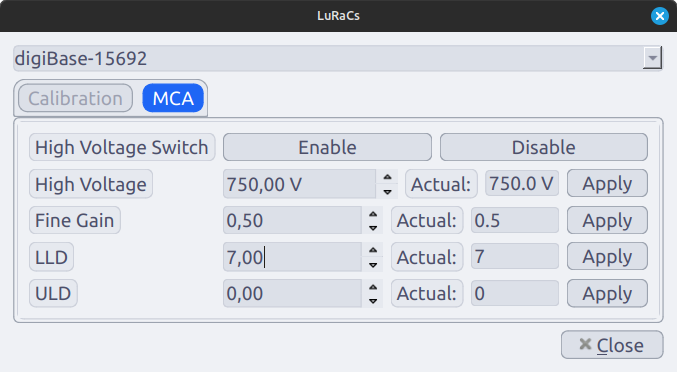
Apply signals the entered value to the detector’s setter function.| LLD | Lower Level Discriminator |
| ULD | Upper Lever Discriminator |
LuRaCs provides a library of data for a selection of common radionuclides and can be viewed in this tab. These can be used to draw reference lines for emissions in the spectrum plot. Most of the nuclide data is sourced from Laboratoire National Henri Becquerel, a few nuclides not provided by LNHB had be sourced from elsewhere. A citation is provided for each nuclide and full references can be found under Help -> Bibliography.
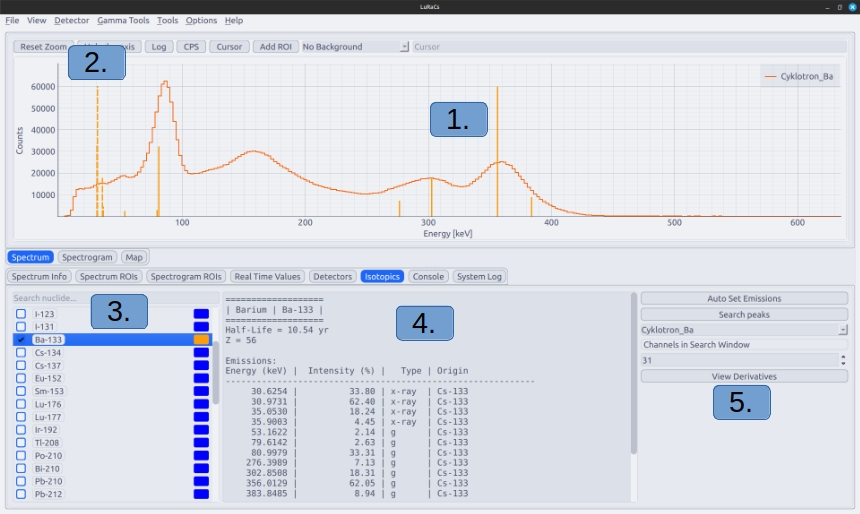
Spectrum and gamma emission lines, drawn as solid lines. Line height corresponds to emission intensity,
X-ray emission lines, drawn as dashed lines. Line height corresponds to emission intensity.
Nuclide list, select nuclide with the checkbox to the left and change colour of the lines with the right coloured button.
Information of the current clicked nuclide.
Peak automation, see bellow.
Auto matching nuclides to ROIs is accomplished by using the centroid of a fitted peak and finding emission close in energy. The matching is weighted by the emission intensity so a strong emission will be chosen over a weak of they are the same distance from the peak centroid. By selecting nuclides the auto matching of nuclides to ROIs, including from using the button inside the ROI Editor, are limited emission from the selected nuclides. Using auto match nuclides against all possible candidates are often unreliable, especially if the energy calibration is imperfect.
The peak search is based on Savitzky-Golay Smoothing and the filter derivatives to compute peak candidates. These candidates are then filtered and the accepted peaks are added as ROIs. The length of the window in the Savitzky-Golay filter can be set in units of channels.
The console allows for entering text commands to control the application and running scripts for basic automation. See for information on available commands and their usage.
The Console can be used for light automation by using the exec command and providing a file path. The file is executed line by line and can used to quickly start set up a measurement session.
The System Log displays messages from the application and detector clients. If something crashes the error and traceback will be displayed here.
Calibration is the operation of determining the energy each channel corresponds to.
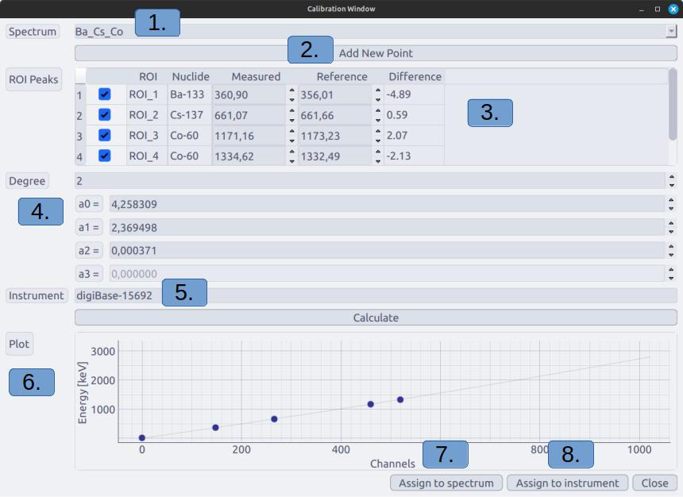
Which spectrum should be calibration. Only data from one spectrum can be used for one calibration.
Add a calibration point not associated with a ROI. Measured and Reference energies must be set manually.
Current calibration points detected and information about them. By unchecking a row it will be ignored in the calculation.
Polynomial degree of the calibration function and the current coefficients. Coefficients can be changed manually but will be overwritten by pressing Calculate.
The spectrum instrument. Can not be changed here, instead edit the spectrum before starting the calibration.
Plot showing the energy as a function of channels based on the latest calculated coefficients.
Assign the coefficients to the Unique Instrument set in (5.).
Assign the coefficients and recalculate the x-axis for the spectrum selected in (1.), updating the view in the Spectrum-tab. This will not change the calibration of an already started spectrogram.
This tool does more than simply reducing the effect of energy resolution but will still be referred to as a deconvolution operation. Deconvolution in this sense is more similar to reconstruction as, like image reconstruction in nuclear medicine, it employs the ML-EM algorithm. By using a detector response matrix, most simply acquired using Mone Carlo-simulations, the effects of the detector resolution, scattering in the detector and other effects can be reduced. The response matrix represents the expected detector response to a photon emitted at a certain energy, see and section [sec:]
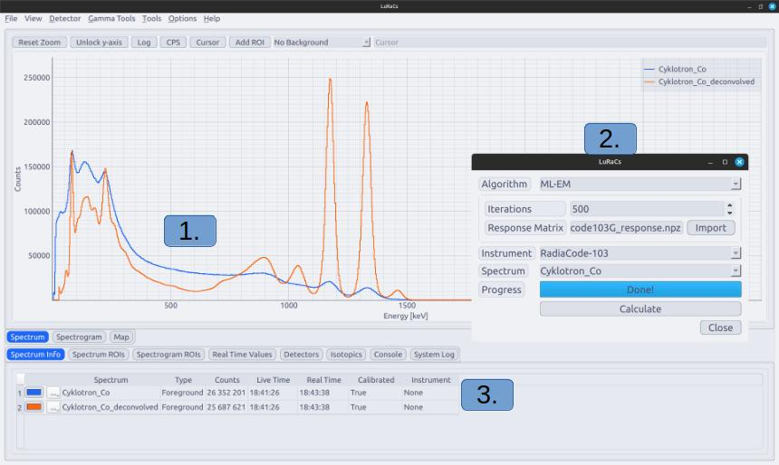
The original Co-60 spectrum in blue and the deconvolved spectrum in orange.
Control window for the deconvolution operation, see .
The deconvolved spectrum is added as new spectrum, copying information from the original.
| Field | Description |
|---|---|
| Algorithm | Which algorithm should be used. Options are ML-EM (use this) and Generalized Richardson-Lucy. |
| Iterations | The number of iterations the algorithm should run. |
| (ML-EM) Response Matrix | The path to a .npz file containing the detector response matrix to be used. |
| Instrument | Instrument providing information the algorithm. For instance, Generalized Richardson-Lucy is based on the resolution saved in the instrument. |
| Spectrum | Which spectrum should be the operation be executed on. |
The intrinsic efficiency is an important detector property and describes the fraction of photons hitting the detector that is actually detected.
The energy resolution describes how well the detector can resolve detected photons of different energies. A low resolution results in broad peaks which can cover smaller peaks, making them harder to detect.
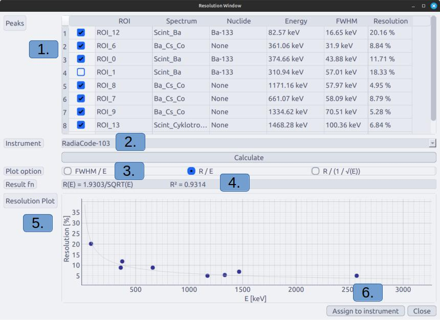
Tabbed Spectrum View so the ROIs are only evaluating one spectrum each.Fitted peaks from all loaded spectra and ROIs. A ROI without a fit can not be included. Unchecked entries will be ignored in the calculation.
Instrument to be given the calculation result. Can be Unique or Generic.
How the calculation results should be plotted. These do not affect the results, only the view.
The resolution function, coefficients are in arbitrary units and not % (% = au * 100). The R2 value of the fitted function compared with the data points.
Assign the calculation results to the instrument set in (2.).
Command Line Arguments can be provided when starting the application from a terminal.
| Option | Description |
|---|---|
| Table – continued from previous page | |
| Option | Description |
–debug |
Launch the application in debug mode. A mock device is added automatically for testing and development. |
–headless |
Run the application without the graphical user interface, using terminal mode instead. |
–clear_local_cache |
Remove all locally stored files and exit the application. |
–import_spectrum <file> [file ...] |
Load one or more spectrum files when starting the application. Each specified file must exist and be supported by the application’s file importer. |
–import_rois <file> |
Load regions of interest from the specified XML file. |
-roi <lower> <upper> |
Add a region of interest with the specified lower and upper energy bounds in keV. The option can be specified multiple times to add several ROIs. |
–nuclides <nuclide> [nuclide ...] |
Preset one or more nuclides in the isotopics interface. This option is applied when the graphical user interface is available. |
-ble <device> [device ...] |
Attempt to establish Bluetooth Low Energy connections using the specified device names. |
–bluetooth <device> [device ...] |
Long-form alias for -ble. Attempts Bluetooth Low Energy connections using the specified device names. |
-usb <device> [device ...] |
Attempt to establish USB connections using the specified device names. Matching is performed against detected USB device product names. |
-nw <ip> [ip ...] |
Attempt to connect to network devices using their IP addresses. |
–network <ip> [ip ...] |
Long-form alias for -nw. Connects to network devices using their IP addresses. |
–serial_gps <interface> |
Connect a GPS receiver using a USB serial interface. The specified value identifies the serial interface used by the GPS receiver. |
–map_url <URL> |
Load an online map from the specified URL at application startup. |
–map_file <path> |
Load a local offline map from the specified .pmtiles file at application startup. |
–map_url and –map_file |
Only one map source may be specified at startup. If both options are provided, no map is loaded and a warning is written to the application log. |
Interaction with LuRaCs is done primarily through the GUI but it also provides a terminal based command line interface, allowing for detector control without a GUI. This can be useful for remote measurements or measurements run on a Raspberry Pi attached to a drone. This mode shares most of the same commands as the GUI Console with the exception of visualisation tools.
This mode is started by running LuRaCs in a terminal with the –headless flag.
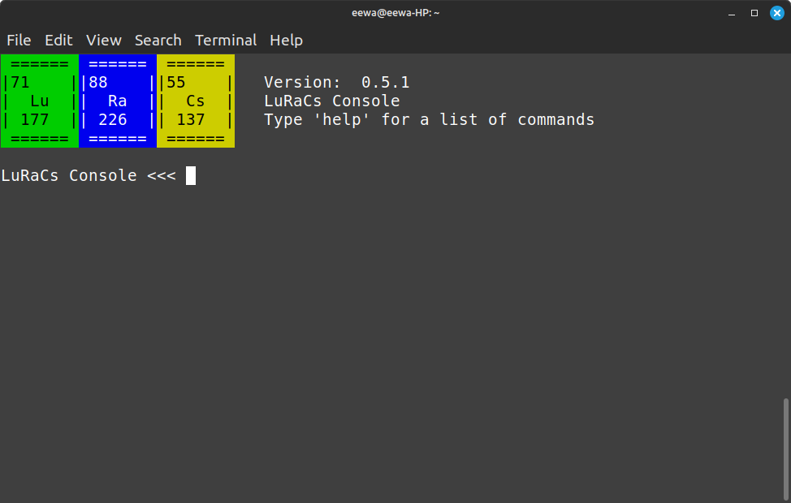
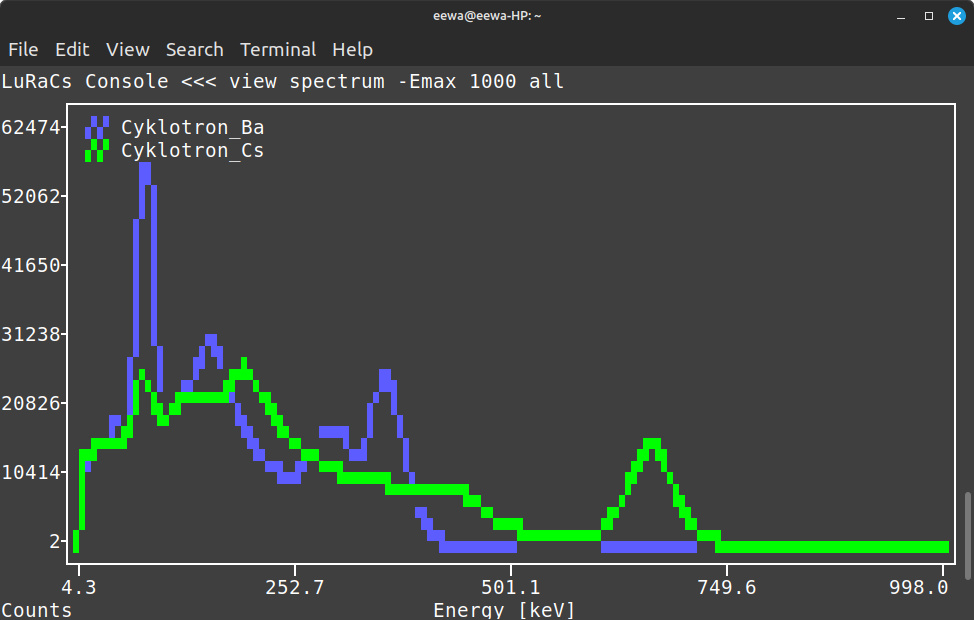
view spectrum -Emax 1000 all. The -Emax 1000 flag limits the x-axis to < 1000 keV.| Command | Description |
|---|---|
| Table – continued from previous page | |
| Command | Description |
help |
Display the available commands and their descriptions. |
clear |
Clear the console and display the application logo. |
exit, quit, shutdown |
Exit the application. |
device scan usb |
Scan for connected USB devices. |
device scan ble |
Scan for nearby Bluetooth Low Energy devices. |
device connect usb <device> |
Connect to a USB device matching the specified name. |
device connect ble <device1> [device2 ...] |
Connect to one or more Bluetooth Low Energy devices. |
device disconnect <device> |
Disconnect the specified device. |
device disconnect all |
Disconnect all connected devices. |
list devices |
Display all connected devices. |
list spectra |
Display all loaded spectra. |
list spectrogram |
Display all loaded spectrograms. |
list rois |
Display all loaded regions of interest. |
index spectrum |
Display indexed spectrum files. |
index spectrogram |
Display indexed spectrogram files. |
index roi |
Display indexed ROI files. |
view spectrum <name> |
Display the specified spectrum. The spectrum can be selected by name or by its index in the loaded spectrum list. |
view spectrum -n <name> |
Specify the spectrum to display by name. |
view spectrum all |
Display all loaded spectra on the same plot. |
view spectrum -A |
Display all loaded spectra on the same plot. |
view spectrum -Emin <energy> |
Set the lower energy limit of the displayed spectrum, in keV. |
view spectrum -Emax <energy> |
Set the upper energy limit of the displayed spectrum, in keV. |
view spectrum -cps |
Display the spectrum as counts per second (CPS) instead of total counts. |
view spectrum -log |
Display the spectrum using the logarithmic representation. |
view spectrum -bkgSub |
Display the background-subtracted spectrum. |
view rois |
Display the currently loaded regions of interest. |
view log |
Display recent application log entries. |
roi <lower> <upper> |
Add a region of interest between the specified lower and upper bounds. |
roi -c |
Clear all regions of interest. |
spectrogram start <device> |
Start a spectrogram for the specified device. |
spectrogram start all |
Start spectrograms for all connected devices. |
spectrogram pause <name> |
Pause the specified spectrogram. |
spectrogram pause all |
Pause all running spectrograms. |
spectrogram unpause <name> |
Resume the specified spectrogram. |
spectrogram unpause all |
Resume all paused spectrograms. |
spectrogram load <path> |
Load a spectrogram from the specified file. |
spectrogram unload <name> |
Unload the specified spectrogram. |
spectrogram unload all |
Unload all loaded spectrograms. |
-n <name> |
Specify a custom name when starting a spectrogram. |
-i <seconds> |
Set the spectrogram save interval. Default: 1 second. |
-c <count> |
Set the number of spectra to concatenate before saving. Default: 1. |
map url <https-URL> |
Load an online map from the specified HTTPS URL. |
map file <path> |
Load a local offline map from a PMTiles file. |
watch |
Continuously display live information from connected devices. Press Ctrl+C to stop. |
exec <script-file> |
Execute commands from a script file. Empty lines and lines beginning with # are ignored. |
Connecting detectors using the GUI is facilitated through a dialog for each type of connection, the are found under Detector -> Connect Bluetooth/USB/Network. Connecting to bluetooth and USB requires the application the scan for available devices, the serial number of the found devices are then displayed for selection.
Connecting the a network devices requires knowing the device IP and type beforehand. Connecting to network detectors have the unique option to use the detector as a GPS. This is primarily intended for the Ortec Detective X which has a built in GPS.
When connecting to serial GPS devices the application scans serial ports and lists suggestions but the port can also be entered manually. The baud rate is typically 4800 but a selection of other common rates are also presented.
The Data Store allows for saving data objects in the application it self for easy access. It also allows for limited editing of previously saved objects. It contains the following object types Spectra, Spectrograms, ROIs, Unique Instruments and Generic Instruments.
All data items saved in the Data Store can be exported to a single zip-file with File -> Export Data Store. Such a file can be imported with File -> Import Data Store.
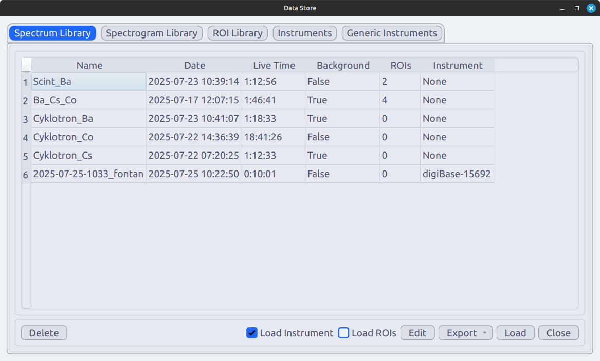
| Field | Description |
|---|---|
| Delete | Remove selected items. |
| Load Instrument | Load the instrument contained in the specific spectrum file. If not selected LuRaCs will attempt to match the instrument name to an existing Unique Instrument save in the Data Store. |
| Load ROIs | Should the ROIs contained in the spectrum be loaded with the spectrum. |
| Edit | Edit the spectrum name or remark. |
| Export | Export the spectrum. Available formats: XML, CSV and xlsx. |
| Load | Load the spectrum into view. |
| Close | Close the data store. |
| Column | Description |
|---|---|
| Name | Spectrum name |
| Date | Date when the measurement of the foreground started |
| Live Time | Live time of the foreground |
| ROIs | How many ROIs are saved with the spectrum, if any. |
| Instrument | Which instrument is saved with the spectrum if any. If an instrument with the same name exists the in the Data Store, it will be used instead of the instrument saved with the spectrum. This can be changed in setting. |
All created spectrograms are placed in the Spectrogram Library. From here they can be loaded back for analysis or continued measurement.
| Field | Description |
|---|---|
| Delete | Remove selected items. |
| Export Spectrum Data | If checked the data for individual channels are included when exporting, everything else is exported the same. |
| Edit | Edit the spectrogram name. |
| Export | Export the spectrogram to another file. Available formats: .db (SQLite3) and xlsx. |
| Load | Load the spectrum into view. |
| Close | Close the data store. |
| Column | Description |
|---|---|
| Name | Spectrogram name |
| Start Date | Date when the measurement started. |
| End Date | Date when the measurement was last stopped. |
| Duration | Total measurement duration. |
| Instrument | Identifier for the detector used the measure the spectrogram. |
The ROI Library allows for saving references to ROIs to then be loaded to a spectrum or spectrogram. This means the roi options like the energy bounds, fitting options and assigned nuclide are saved but data like fitting parameters or peak counts are not.

| Field | Description |
|---|---|
| Delete | Remove selected items. |
| Edit | Edit the ROI collection name and the ROIs contained within, see . |
| Export | Export the ROIs to another file. Available formats: .xml. |
| Load to Spectrogram | Load the ROIs as spectrogram ROIs. |
| Load to Spectrum | Load the ROIs as spectrum ROIs. |
| Close | Close the data store. |
| Column | Description |
|---|---|
| Name | Spectrogram name |
| Start Date | Date when the measurement started. |
| End Date | Date when the measurement was last stopped. |
| Duration | Total measurement duration. |
| Instrument | Identifier for the detector used the measure the spectrogram. |
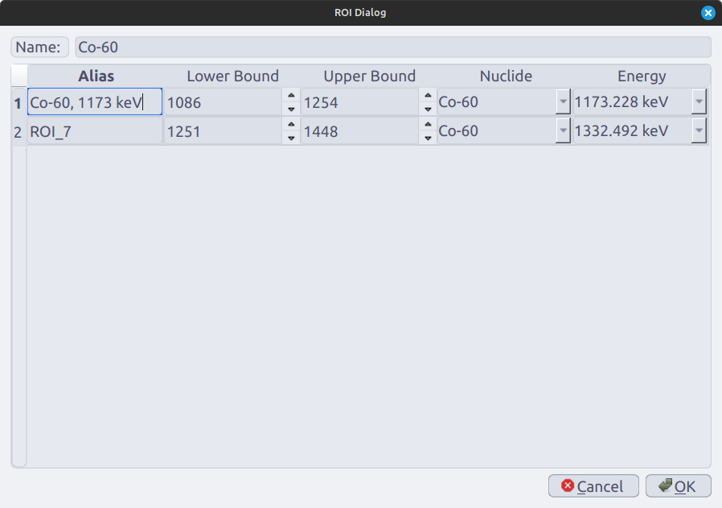
The tabs for the Unique and Generic Instruments are very similar and treated in the same section.
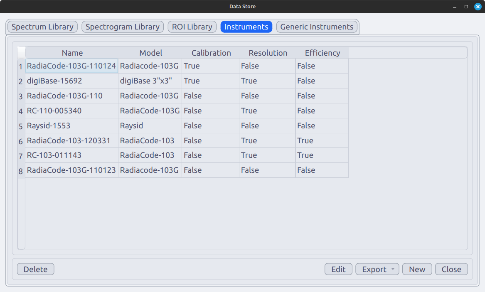
| Field | Description |
|---|---|
| Delete | Remove selected items. |
| Edit | Edit an existing instrument, see . |
| Export | Export the instrument data to another file. Available formats: .xml. |
| New | Create a new instrument. Unique Instruments can inherit data from Generic Instruments. |
| Close | Close the data store. |
| Column | Description |
|---|---|
| Name | Instrument name (Only for Unique Instrument) |
| Model | Name of the instrument model. |
| Calibration | If the instrument stores an energy calibration. (Only for Unique Instrument) |
| Resolution | If the instrument stores an energy resolution. |
| Efficiency | If the instrument stores an intrinsic efficiency. |

The settings are devided into Settings which contain basic and cosmetic settings, and Advanced Settings containing settings that users rarely need to interact with.
| Setting | Description |
|---|---|
| Table – continued from previous page | |
| Setting | Description |
| Theme | Select the visual theme used by the application interface and plots. |
| Plot Colour Scheme | Select the colour scheme used when automatically assigning colours to plotted spectra. |
| Spectrum Draw Style | Select how spectra are rendered. Available options are Pen, Brush, and Pen + Brush. |
| Font Size | Set the application font size in points. |
| Spectrum Plot xMax | Set the maximum energy displayed on spectrum plots, in keV. |
| Verbose Calculation Logging | Enable additional logging during calculations. This can be useful when diagnosing calculation or processing problems. |
| Load ROIs on import | Automatically load regions of interest when importing a spectrum from a file. |
| Load instrument on import | Automatically load instrument information when importing a spectrum from a file. |
| Load calibration from instrument | Load the energy calibration associated with the instrument when importing data from the Data Store or from a file. |
| Setting | Description |
|---|---|
| Table – continued from previous page | |
| Setting | Description |
| Update Loop Delay | Set the delay between iterations of the device monitoring and update loop, in seconds. |
| Spectrum Update Delay | Set the delay between spectrum updates during live acquisition, in seconds. |
| GUI Scan Length | Set the duration of Bluetooth Low Energy scans initiated through the graphical user interface, in seconds. |
| Headless Scan Length | Set the duration of Bluetooth Low Energy scans when no the scan is not tracked in the GUI, in seconds. |
| Optimizer Max Iter | Set the maximum number of iterations allowed by the optimizer. |
| Optimizer Tolerance | Set the convergence tolerance used by the optimizer. |
| Use Chi2 Weight | Enable χ2 weighting during optimization. |
| Log Exceptions | Enable logging of unhandled exceptions. |
| Write logs to file | Enable writing log messages to the application log file. |
| Write logs to console | Enable writing log messages to the terminal or console. |
| Headless Log Buffer Length | Set the maximum number of log entries retained in the in-memory log buffer. Changes to this setting require an application restart. |
| Spectrogram View Buffer | Set the number of recent spectrogram data points retained for display. |
| Save extra GPS data | Enable saving additional GPS information with map-related data. |